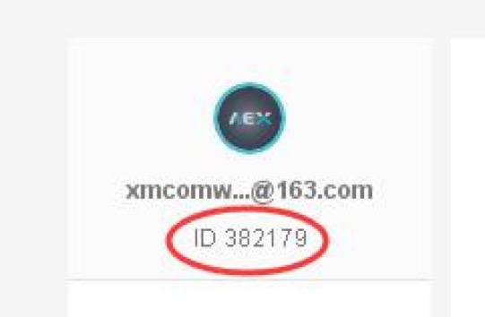
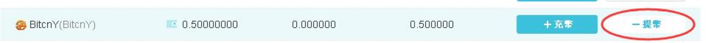
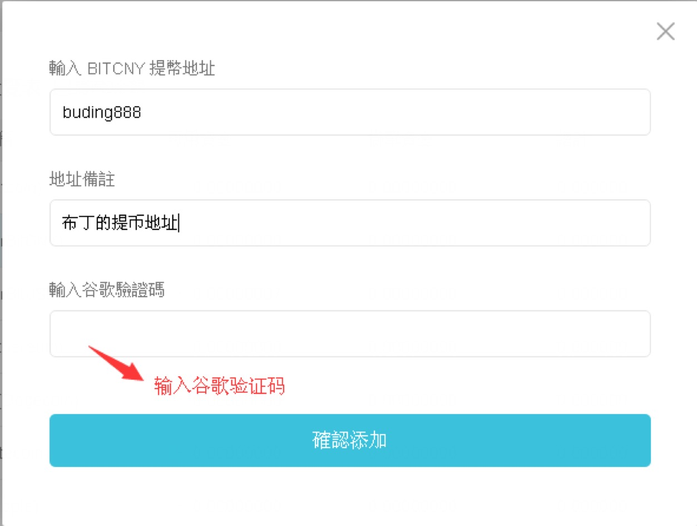
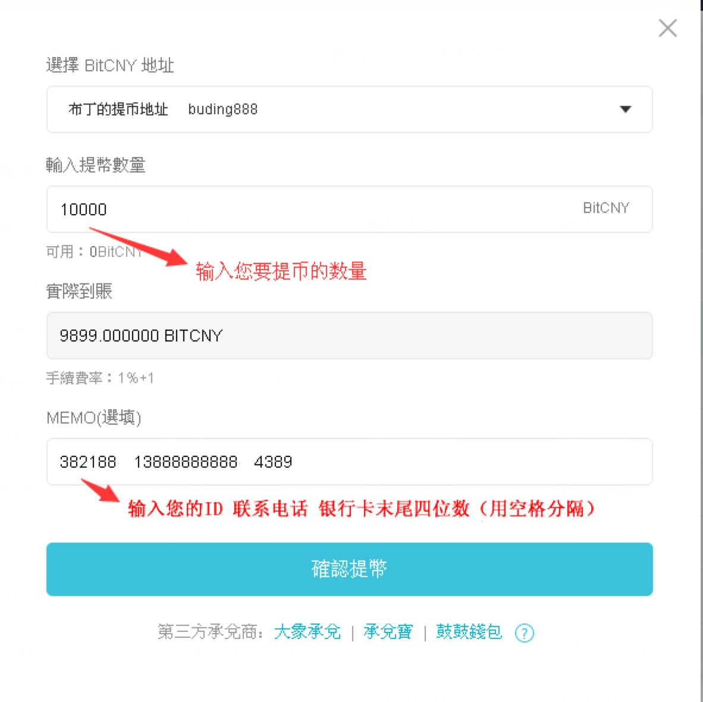

1.什么是BitCNY？什么是BitUSD？
答：BitCNY/BitUSD是比特股系统内的一种加密数字货币，也叫市场锚定资产或SmartCoin，中文名为比特人民币/比特美元。和比特币、莱特币等虚拟货币相比，BitCNY/BitUSD几秒钟就可以确认，并且价格稳定，1BitCNY = 1CNY，1BitUSD = 1USD。由于BitCNY/BitUSD背后有2倍价值的比特股作为抵押，使得持有者不需要担心第三方会不守承诺兑现其价值，因为他可以随时把BitCNY/BitUSD在市场上卖掉获得等值人民币/美元的比特股。由此看来，BitCNY/BitUSD可以看成是不需要第三方背书的资产，它的价值由背后的2倍价值的比BTS来保证。
BitCNY/BitUSD支付传输快（3秒出块），并且价值稳定，有效解决了比特币由于价格波动过大使得商家难以使用的问题。具有很强的便利性和实用性，对管制免疫。通过小二承兑平台购买BitCNY/BitUSD后，就可以在支持BitCNY/BitUSD交易的平台进行币币交易了。
2.怎么充值BitCNY或BitUSD？
答：您需要联系我们的承兑商QQ或微信购买BitCNY或BitUSD。您只需汇款给我们并告知您在交易平台里的ID，我们收到汇款后，会将您要购买的BitCNY或BitUSD冲入指定的ID，然后您就可以在交易区进行交易了。充值时间很快，通常几分钟就能到账。
总结一句话就是：你给我钱，我给你币
下面以Aex平台为例，介绍如何充值BitCNY：
详细流程如下：
①联系承兑商QQ或微信，并付款到指定帐号。
②将您在aex.com个人中心里的ID告诉承兑商。（点击右上角“+充值”，然后网页左边显示的就是您的ID，如下图所示。注：千万不能给给错ID，否则会充给别人。）
③我们收到汇款后会将BitCNY发到您的账户中。正常来说，5分钟左右即可充入您的账户。
3.BitCNY或BitUSD如何提现？
答：您需要找我们的承兑商索取收币地址，然后在交易平台里完成提币操作。我们收到之后会给您的指定帐号汇款。如果是自动提币，只要几分钟就可以提到我们账户，如果是人工审核提币，要等客服审核通过后才能完成提币。
总之，您在交易区卖出虚拟币之后，虚拟币变成了BitCNY或BitUSD。您把BitCNY或BitUSD发给我们，我们把钱转给您，这就是提现。总结一句话就是：你给我币，我给你钱。
下面以Aex平台为例，介绍如何进行BitCNY的提现：
①如果您是第一次申请提现，请联系承兑商登记您的提币信息（包括平台账户ID、银行卡号、户名、开户行、联系电话等），登记一次即可。以后每次申请提现的时候，我们都会按照您填写的银行收款帐号给您转账。
②联系承兑商获取BitCNY的提币地址（比如buding888）。
③点击BitCNY右侧的“提币”按钮（如下图）。
④将承兑商给您的提币地址添加进去（第一次提币需要添加，以后就可以直接选择，无需再次添加）。添加方法如下图所示：
⑤再次点击BitCNY右侧的“提币”，按要求填写。注意在Memo处填写您的ID、联系电话、银行卡末四位数。我们会对照您登记的收款帐号。如果联系电话、银行卡末四位数和您登记的一致，我们就会按照您提供的帐号给您转账。
⑥至此，提现操作完毕。您可以点击财务记录查看转币的状态，如果显示“等待处理”就是尚未转达，如果显示“已到帐”就是已经将币转给承兑商了。我们在收到您发送的BitCNY之后。会在几个小时内将款项转到您的指定账户。
4.充值和提现的手续费多少？
答：BitCNY和BitUSD是由双倍以上价值的比特股BTS抵押借贷出来的。承兑商要承担BTS下跌甚至被强制平仓的风险。如果BTS持续下跌，承兑商还要承担亏本风险。另外，每次给大家充值的时候，承兑商还需要承担转币手续费。所以充值和提现都会适当收取一定的手续费，这个手续费是波动的，由市场供求关系来决定。
5.BitCNY或BitUSD是无限的吗？总额有多少？
答：前面提到，BitCNY和BitUSD是由双倍以上价值的比特股BTS抵押借贷出来的。如果BTS的价格下跌，市值缩小，能借贷的BitCNY或BitUSD就少。反之，能借贷的BitCNY或BitUSD就多。但是也不是无限量的。目前行情来说，BitCNY的总供应量不到一亿。
6.BitCNY或BitUSD会不会贬值？
答：BitCNY或BitUSD的价值是恒定不变的，是不会贬值的。和USDT不同的是，它不由某一家机构为其做信用背书，它是去中心化的虚拟币。
7.小二承兑平台可以给哪些平台充值？
答：所有支持BitCNY和BitUSD交易对的平台都可以充值。
8.小二承兑平台可靠吗？信誉有何保障？
答：我们严格控制承兑商准入门槛，对承兑商进行严格考核并登记备案，完全值得您的信赖。